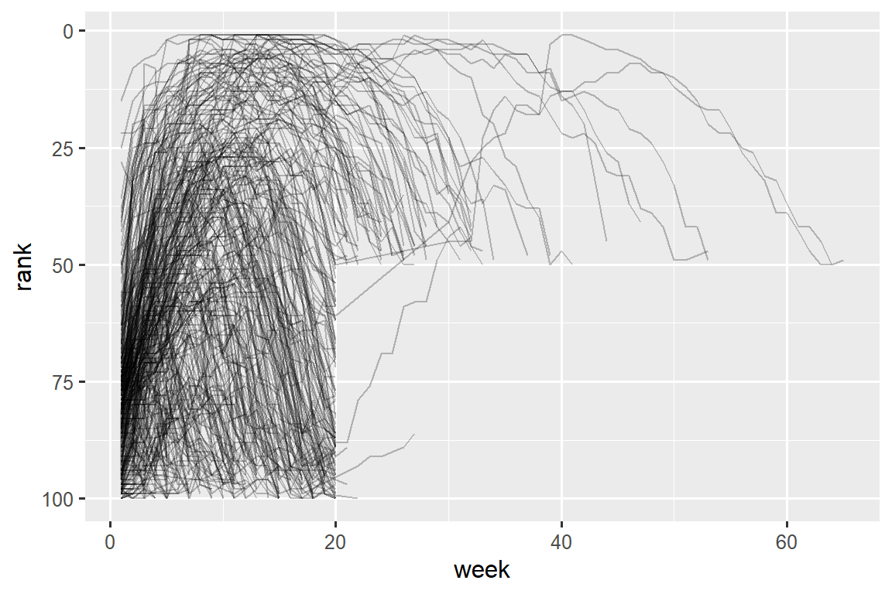

library(tidyverse)
#> Warning: package 'tidyverse' was built under R version 4.2.3
#> Warning: package 'ggplot2' was built under R version 4.2.3
#> Warning: package 'tibble' was built under R version 4.2.3
#> Warning: package 'tidyr' was built under R version 4.2.3
#> Warning: package 'readr' was built under R version 4.2.3
#> Warning: package 'purrr' was built under R version 4.2.3
#> Warning: package 'dplyr' was built under R version 4.2.3
#> Warning: package 'stringr' was built under R version 4.2.2
#> Warning: package 'forcats' was built under R version 4.2.3
#> Warning: package 'lubridate' was built under R version 4.2.36 Data tidying
You are reading the work-in-progress second edition of R for Data Science. This chapter is largely complete and just needs final proof reading. You can find the complete first edition at https://r4ds.had.co.nz.
6.1 Introduction
“Happy families are all alike; every unhappy family is unhappy in its own way.”
— Leo Tolstoy
“Tidy datasets are all alike, but every messy dataset is messy in its own way.”
— Hadley Wickham
在这一章中，您将学习使用一种称为 tidy data 的系统，在 R 中以一种一致的方式组织您的数据。 将数据转换成这种格式需要一些初始工作，但这种工作在长期来看是值得的。 一旦您拥有 tidy data 和 tidyverse 包中提供的 tidy tools，您将花费更少的时间将数据从一种表示转换为另一种表示，从而能够更多地专注于您关心的数据问题。
在这一章中，您首先将首先学习 tidy data 的定义，并将其应用于一个简单的示例数据集。 然后，我们将深入探讨用于整理数据的主要工具：数据透视（pivoting）。 pivoting 使您可以在不改变任何值的情况下改变数据的形式。
6.1.1 Prerequisites
在本章中，我们将专注于 tidyr，这是一个提供了一系列工具来帮助整理混乱数据集的包。 tidyr 是 core tidyverse 的成员之一。
从本章开始，我们将抑制来自 library(tidyverse) 的加载消息。
6.2 Tidy data
可以用多种方式表示相同的基础数据。 下面的示例展示了相同的数据以三种不同的方式组织。 每个数据集都显示了四个变量的相同值：country、year、population 和结核病（TB）的记录 cases，但是每个数据集以不同的方式组织这些值。
table1
#> # A tibble: 6 × 4
#> country year cases population
#> <chr> <dbl> <dbl> <dbl>
#> 1 Afghanistan 1999 745 19987071
#> 2 Afghanistan 2000 2666 20595360
#> 3 Brazil 1999 37737 172006362
#> 4 Brazil 2000 80488 174504898
#> 5 China 1999 212258 1272915272
#> 6 China 2000 213766 1280428583
table2
#> # A tibble: 12 × 4
#> country year type count
#> <chr> <dbl> <chr> <dbl>
#> 1 Afghanistan 1999 cases 745
#> 2 Afghanistan 1999 population 19987071
#> 3 Afghanistan 2000 cases 2666
#> 4 Afghanistan 2000 population 20595360
#> 5 Brazil 1999 cases 37737
#> 6 Brazil 1999 population 172006362
#> # ℹ 6 more rows
table3
#> # A tibble: 6 × 3
#> country year rate
#> <chr> <dbl> <chr>
#> 1 Afghanistan 1999 745/19987071
#> 2 Afghanistan 2000 2666/20595360
#> 3 Brazil 1999 37737/172006362
#> 4 Brazil 2000 80488/174504898
#> 5 China 1999 212258/1272915272
#> 6 China 2000 213766/1280428583这些都是相同基础数据的表示方式，但它们在使用上并不同样方便。 其中一个数据集，table1，因为它是整洁的（tidy），所以在 tidyverse 内部使用起来会更加方便。
有三个相互关联的规则定义了一个整洁的数据集：
- 每个变量是一列，每列是一个变量。
- 每个样本是一行，每行是一个样本。
- 每个值是一个单元格，每个单元格是一个单一的值。
Figure 6.1 可视化地展示了这些规则。

为什么要确保你的数据是整洁的（tidy）？ 有两个主要的优势：
选择一种一致的数据存储方式有一个普遍的优势。 如果您拥有一种一致的数据结构，学习与之配套的工具会更容易，因为它们具有基本的统一性。
将变量（variables）放置在列（columns）中具有特定的优势，因为这可以展现出 R 的向量化（vectorized）特性。 正如您在 ?sec-mutate 和 ?sec-summarize 中学到的，大多数内置的 R 函数都可以处理值的向量（vectors）。 这使得转换整洁数据（tidy data）感觉特别自然。
dplyr、ggplot2 和 tidyverse 中的其他所有包都被设计用于处理整洁数据（tidy data）。 以下是一些小例子，展示了如何处理 table1。
# Compute rate per 10,000
table1 |>
mutate(rate = cases / population * 10000)
#> # A tibble: 6 × 5
#> country year cases population rate
#> <chr> <dbl> <dbl> <dbl> <dbl>
#> 1 Afghanistan 1999 745 19987071 0.373
#> 2 Afghanistan 2000 2666 20595360 1.29
#> 3 Brazil 1999 37737 172006362 2.19
#> 4 Brazil 2000 80488 174504898 4.61
#> 5 China 1999 212258 1272915272 1.67
#> 6 China 2000 213766 1280428583 1.67
# Compute total cases per year
table1 |>
group_by(year) |>
summarize(total_cases = sum(cases))
#> # A tibble: 2 × 2
#> year total_cases
#> <dbl> <dbl>
#> 1 1999 250740
#> 2 2000 296920
# Visualize changes over time
ggplot(table1, aes(x = year, y = cases)) +
geom_line(aes(group = country), color = "grey50") +
geom_point(aes(color = country, shape = country)) +
scale_x_continuous(breaks = c(1999, 2000)) # x-axis breaks at 1999 and 2000![This figure shows the number of cases in 1999 and 2000 for Afghanistan, Brazil, and China, with year on the x-axis and number of cases on the y-axis. Each point on the plot represents the number of cases in a given country in a given year. The points for each country are differentiated from others by color and shape and connected with a line, resulting in three, non-parallel, non-intersecting lines. The numbers of cases in China are highest for both 1999 and 2000, with values above 200,000 for both years. The number of cases in Brazil is approximately 40,000 in 1999 and approximately 75,000 in 2000. The numbers of cases in Afghanistan are lowest for both 1999 and 2000, with values that appear to be very close to 0 on this scale.](data-tidy_files/figure-html/unnamed-chunk-5-1.png)
6.2.1 Exercises
对于每个示例表格，描述每个观测（observation）和每列代表的内容。
-
描绘出计算
table2和table3中的rate所使用的过程。 您需要执行四个操作：- 提取每个国家每年的结核病病例数（cases）。
- 提取每个国家每年的相应人口（population）。
- 将病例数除以人口，并乘以 10000。
- 存储在适当的位置。
您还没有学习到实际执行这些操作所需的所有函数，但您应该能够思考所需的转换过程。
6.3 Lengthening data
整洁数据（tidy data）的原则可能看起来如此显而易见，以至于您会想知道是否会遇到不整洁的数据集。 然而，不幸的是，大多数真实数据都是不整洁的。 这主要有两个原因：
数据通常被组织成为实现除了分析之外的某个目标。 例如，常见的情况是为了简化数据输入而结构化数据，而不是为了方便分析。
大多数人不熟悉整洁数据（tidy data）的原则，除非您花费大量时间处理数据，否则很难自己推导出这些原则。
这意味着大多数实际分析都需要进行一些整理工作。 首先，您需要确定基础变量（variables）和观测（observations）是什么。 有时这很容易；其他时候，您可能需要与最初生成数据的人进行咨询。 接下来，您将 pivot 您的数据为整洁的形式，其中变量（variables）位于列（columns）中，观测（observations）位于行（rows）中。
tidyr 提供了两个用于数据透视（pivoting）的函数：pivot_longer() 和 pivot_wider()。 我们首先从 pivot_longer() 开始，因为它是最常见的情况。 让我们深入一些示例。
6.3.1 Data in column names
billboard 数据集记录了 2000 年歌曲的 billboard 排名：
billboard
#> # A tibble: 317 × 79
#> artist track date.entered wk1 wk2 wk3 wk4 wk5
#> <chr> <chr> <date> <dbl> <dbl> <dbl> <dbl> <dbl>
#> 1 2 Pac Baby Don't Cry (Ke… 2000-02-26 87 82 72 77 87
#> 2 2Ge+her The Hardest Part O… 2000-09-02 91 87 92 NA NA
#> 3 3 Doors Down Kryptonite 2000-04-08 81 70 68 67 66
#> 4 3 Doors Down Loser 2000-10-21 76 76 72 69 67
#> 5 504 Boyz Wobble Wobble 2000-04-15 57 34 25 17 17
#> 6 98^0 Give Me Just One N… 2000-08-19 51 39 34 26 26
#> # ℹ 311 more rows
#> # ℹ 71 more variables: wk6 <dbl>, wk7 <dbl>, wk8 <dbl>, wk9 <dbl>, …在这个数据集中，每个观测（observation）都是一首歌曲。 前三列（artist, track and date.entered）是描述歌曲的变量（variables）。 然后我们有 76 列（wk1-wk76），描述了歌曲在每周的排名1。 这里，列名是一个变量（week），单元格的值是另一个变量（rank）。
为了整理这个数据，我们将使用 pivot_longer() 函数：
billboard |>
pivot_longer(
cols = starts_with("wk"),
names_to = "week",
values_to = "rank"
)
#> # A tibble: 24,092 × 5
#> artist track date.entered week rank
#> <chr> <chr> <date> <chr> <dbl>
#> 1 2 Pac Baby Don't Cry (Keep... 2000-02-26 wk1 87
#> 2 2 Pac Baby Don't Cry (Keep... 2000-02-26 wk2 82
#> 3 2 Pac Baby Don't Cry (Keep... 2000-02-26 wk3 72
#> 4 2 Pac Baby Don't Cry (Keep... 2000-02-26 wk4 77
#> 5 2 Pac Baby Don't Cry (Keep... 2000-02-26 wk5 87
#> 6 2 Pac Baby Don't Cry (Keep... 2000-02-26 wk6 94
#> 7 2 Pac Baby Don't Cry (Keep... 2000-02-26 wk7 99
#> 8 2 Pac Baby Don't Cry (Keep... 2000-02-26 wk8 NA
#> 9 2 Pac Baby Don't Cry (Keep... 2000-02-26 wk9 NA
#> 10 2 Pac Baby Don't Cry (Keep... 2000-02-26 wk10 NA
#> # ℹ 24,082 more rows数据之后，还有三个关键论点：
-
cols指定哪些列需要被 pivoted，即哪些列不是变量。此参数使用与select()相同的语法，因此这里我们可以使用!c(artist, track, date.entered)或starts_with("wk")。 -
names_to命名存储在 column names 中的变量，我们将该变量命名为week。 -
values_to命名存储在 cell values 中的变量，我们将该变量命名为rank。
请注意，在代码中引用了 "week" 和 "rank" ，因为这些是我们正在创建的新变量，当我们运行 pivot_longer() 调用时，它们还不存在于数据中。
现在让我们将注意力转向结果，longer data frame。 如果一首歌进入前 100 名的时间少于 76 周，会发生什么情况？ 以 2 Pac 的 “Baby Don’t Cry” 为例。 上面的输出表明它只在前 100 名中停留了 7 周，其余所有周都用缺失值填充。 这些 NAs 并不真正代表未知的观察结果；它们是由 dataset2 的结构强制存在的，因此我们可以要求 pivot_longer() 通过设置 values_drop_na = TRUE 来删除它们：
billboard |>
pivot_longer(
cols = starts_with("wk"),
names_to = "week",
values_to = "rank",
values_drop_na = TRUE
)
#> # A tibble: 5,307 × 5
#> artist track date.entered week rank
#> <chr> <chr> <date> <chr> <dbl>
#> 1 2 Pac Baby Don't Cry (Keep... 2000-02-26 wk1 87
#> 2 2 Pac Baby Don't Cry (Keep... 2000-02-26 wk2 82
#> 3 2 Pac Baby Don't Cry (Keep... 2000-02-26 wk3 72
#> 4 2 Pac Baby Don't Cry (Keep... 2000-02-26 wk4 77
#> 5 2 Pac Baby Don't Cry (Keep... 2000-02-26 wk5 87
#> 6 2 Pac Baby Don't Cry (Keep... 2000-02-26 wk6 94
#> # ℹ 5,301 more rows行数现在少得多，表明许多具有 NAs 的行已被删除。
您可能还想知道如果一首歌进入前 100 名超过 76 周会发生什么？ 我们无法从这些数据中看出，但您可能会猜测额外的列 wk77、wk78, … 将添加到数据集中。
这些数据现在很整洁，但我们可以通过使用 mutate() 和 readr::parse_number() 将 week 值从字符串（character strings）转换为数字（numbers），从而使将来的计算变得更容易。 parse_number() 是一个方便的函数，它将从字符串中提取第一个数字，忽略所有其他文本。
billboard_longer <- billboard |>
pivot_longer(
cols = starts_with("wk"),
names_to = "week",
values_to = "rank",
values_drop_na = TRUE
) |>
mutate(
week = parse_number(week)
)
billboard_longer
#> # A tibble: 5,307 × 5
#> artist track date.entered week rank
#> <chr> <chr> <date> <dbl> <dbl>
#> 1 2 Pac Baby Don't Cry (Keep... 2000-02-26 1 87
#> 2 2 Pac Baby Don't Cry (Keep... 2000-02-26 2 82
#> 3 2 Pac Baby Don't Cry (Keep... 2000-02-26 3 72
#> 4 2 Pac Baby Don't Cry (Keep... 2000-02-26 4 77
#> 5 2 Pac Baby Don't Cry (Keep... 2000-02-26 5 87
#> 6 2 Pac Baby Don't Cry (Keep... 2000-02-26 6 94
#> # ℹ 5,301 more rows现在我们在一个变量中拥有所有 week 数值，在另一个变量中拥有所有 rank 值，我们可以很好地可视化歌曲排名如何随时间变化。 代码如下所示，结果如 Figure 6.2 所示。 我们可以看到，很少有歌曲能在前 100 名中保持超过 20 周的时间。
billboard_longer |>
ggplot(aes(x = week, y = rank, group = track)) +
geom_line(alpha = 0.25) +
scale_y_reverse()20 and rank is >50." width="576">
6.3.2 How does pivoting work?
现在您已经了解了如何使用 pivoting 来重塑数据，让我们花一点时间来直观地了解 pivoting 对数据的作用。 让我们从一个非常简单的数据集开始，以便更容易地了解正在发生的情况。 假设我们有 3 位 id 为 A、B、C 的患者（patients），我们对每位患者（patients）进行两次血压（blood pressure）测量。 我们将使用 tribble() 创建数据，这是一个手动构建小 tibbles 的便捷函数：
df <- tribble(
~id, ~bp1, ~bp2,
"A", 100, 120,
"B", 140, 115,
"C", 120, 125
)我们希望我们的新数据集具有三个变量：id（已存在）、measurement（列名称）和 value（单元格值）。 为了实现这一点，我们需要 pivot df longer：
df |>
pivot_longer(
cols = bp1:bp2,
names_to = "measurement",
values_to = "value"
)
#> # A tibble: 6 × 3
#> id measurement value
#> <chr> <chr> <dbl>
#> 1 A bp1 100
#> 2 A bp2 120
#> 3 B bp1 140
#> 4 B bp2 115
#> 5 C bp1 120
#> 6 C bp2 125重塑是如何进行的？ 如果我们逐列思考就更容易看出。 如 Figure 6.3 所示，对于原始数据集（id）中已经是变量的列中的值需要重复，对于每个被 pivoted 的列重复一次。

column names 成为新变量中的值，其名称由 names_to 定义，如 Figure 6.4 所示。 它们需要对原始数据集中的每一行重复一次。

单元格值也会成为新变量中的值，其名称由 values_to 定义。 它们一排一排地展开。 Figure 6.5 说明了该过程。

6.3.3 Many variables in column names
当您将多条信息塞入 column names 中，并且您希望将这些信息存储在单独的新变量中时，就会出现更具挑战性的情况。 例如，采用 who2 数据集，这是跟你之前看到的 table1 是相同来源的数据：
who2
#> # A tibble: 7,240 × 58
#> country year sp_m_014 sp_m_1524 sp_m_2534 sp_m_3544 sp_m_4554
#> <chr> <dbl> <dbl> <dbl> <dbl> <dbl> <dbl>
#> 1 Afghanistan 1980 NA NA NA NA NA
#> 2 Afghanistan 1981 NA NA NA NA NA
#> 3 Afghanistan 1982 NA NA NA NA NA
#> 4 Afghanistan 1983 NA NA NA NA NA
#> 5 Afghanistan 1984 NA NA NA NA NA
#> 6 Afghanistan 1985 NA NA NA NA NA
#> # ℹ 7,234 more rows
#> # ℹ 51 more variables: sp_m_5564 <dbl>, sp_m_65 <dbl>, sp_f_014 <dbl>, …该数据集由世界卫生组织收集，记录有关结核病诊断（tuberculosis diagnoses）的信息。 有两列已经是变量（variables）且易于解释：country 和 year。 接下来是 56 列，例如 sp_m_014、ep_m_4554、rel_m_3544。 如果你盯着这些列足够长的时间，你会发现其中存在一种模式。 每个列名称由三部分组成，并用 _ 分隔。 第一部分 sp/rel/ep 描述了用于诊断的方法（diagnosis），第二部分 m/f 是性别（gender）（在此数据集中编码为二进制变量），第三部分 014/1524/2534/3544/4554/5564/65 是年龄范围（age）（例如，014 代表 0-14）。
因此，在本例中，who2 中记录了六条信息：country 和 year（已经是列）；诊断方法（diagnosis）、性别类别（gender）和年龄范围类别（age）（包含在其他列名称中）；以及该类别中的患者数量（count）（单元格值）。 为了将这六条信息组织在六个单独的列中，我们使用 pivot_longer() 以及 names_to 的列名称向量将原始变量名称拆分为 names_sep 片段以及 values_to 的列名称：
who2 |>
pivot_longer(
cols = !(country:year),
names_to = c("diagnosis", "gender", "age"),
names_sep = "_",
values_to = "count"
)
#> # A tibble: 405,440 × 6
#> country year diagnosis gender age count
#> <chr> <dbl> <chr> <chr> <chr> <dbl>
#> 1 Afghanistan 1980 sp m 014 NA
#> 2 Afghanistan 1980 sp m 1524 NA
#> 3 Afghanistan 1980 sp m 2534 NA
#> 4 Afghanistan 1980 sp m 3544 NA
#> 5 Afghanistan 1980 sp m 4554 NA
#> 6 Afghanistan 1980 sp m 5564 NA
#> # ℹ 405,434 more rowsnames_sep 的替代方法是 names_pattern，你可以使用它从更复杂的命名场景中提取变量， 一旦您在 Chapter 16 中了解了正则表达式。
从概念上讲，这只是您已经见过的更简单情况的一个微小变化。 Figure 6.6 显示了基本思想：现在，column names 不再 pivoting 成单个列，而是 pivot 成多个列。 您可以想象这发生在两个步骤中（first pivoting and then separating），但在幕后它发生在一步中，因为这样更快。

6.3.4 Data and variable names in the column headers
复杂性的下一步是列名包含变量值和变量名的混合。 以 household 数据集为例：
household
#> # A tibble: 5 × 5
#> family dob_child1 dob_child2 name_child1 name_child2
#> <int> <date> <date> <chr> <chr>
#> 1 1 1998-11-26 2000-01-29 Susan Jose
#> 2 2 1996-06-22 NA Mark <NA>
#> 3 3 2002-07-11 2004-04-05 Sam Seth
#> 4 4 2004-10-10 2009-08-27 Craig Khai
#> 5 5 2000-12-05 2005-02-28 Parker Gracie该数据集包含有关五个家庭的数据，其中最多包含两个孩子的姓名和出生日期。 此数据集中的新挑战是列名称包含两个变量的名称（dob、name）和另一个变量的值（child，值为 1 或 2）。 为了解决这个问题，我们再次需要向 names_to 提供一个向量，但这次我们使用特殊的 “.value” 语句；这不是变量的名称，而是告诉 pivot_longer() 执行不同操作的唯一值。 这会覆盖通常的 values_to 参数，以使用 pivoted column name 的第一个组成部分作为输出中的变量名称。
household |>
pivot_longer(
cols = !family,
names_to = c(".value", "child"),
names_sep = "_",
values_drop_na = TRUE
)
#> # A tibble: 9 × 4
#> family child dob name
#> <int> <chr> <date> <chr>
#> 1 1 child1 1998-11-26 Susan
#> 2 1 child2 2000-01-29 Jose
#> 3 2 child1 1996-06-22 Mark
#> 4 3 child1 2002-07-11 Sam
#> 5 3 child2 2004-04-05 Seth
#> 6 4 child1 2004-10-10 Craig
#> # ℹ 3 more rows我们再次使用 values_drop_na = TRUE，因为输入的形状强制创建显式缺失变量（例如，对于只有一个孩子的家庭）。
Figure 6.7 通过一个更简单的示例说明了基本思想。 当您在 names_to 中使用 ".value" 时，输入中的列名称将影响输出中的值和变量名称。

names_to = c(".value", "num") 进行 Pivoting 将列名称分为两个部分：第一部分确定输出列名称（x or y），第二部分确定 num 列的值。6.4 Widening data
到目前为止，我们已经使用 pivot_longer() 来解决值以列名结束的常见问题。 接下来，我们将转向 pivot_wider()，它通过增加列和减少行来使数据集更宽（wider），并且当一个观测（observation）分布在多行上时会有所帮助。 这种情况在野外似乎不太常见，但在处理政府数据时似乎确实经常出现。
我们首先查看 cms_patient_experience，这是来自 Medicare 和 Medicaid 服务中心的数据集，用于收集有关患者体验的数据：
cms_patient_experience
#> # A tibble: 500 × 5
#> org_pac_id org_nm measure_cd measure_title prf_rate
#> <chr> <chr> <chr> <chr> <dbl>
#> 1 0446157747 USC CARE MEDICAL GROUP INC CAHPS_GRP_1 CAHPS for MIPS… 63
#> 2 0446157747 USC CARE MEDICAL GROUP INC CAHPS_GRP_2 CAHPS for MIPS… 87
#> 3 0446157747 USC CARE MEDICAL GROUP INC CAHPS_GRP_3 CAHPS for MIPS… 86
#> 4 0446157747 USC CARE MEDICAL GROUP INC CAHPS_GRP_5 CAHPS for MIPS… 57
#> 5 0446157747 USC CARE MEDICAL GROUP INC CAHPS_GRP_8 CAHPS for MIPS… 85
#> 6 0446157747 USC CARE MEDICAL GROUP INC CAHPS_GRP_12 CAHPS for MIPS… 24
#> # ℹ 494 more rows所研究的核心单位是一个组织，但每个组织分布在六行中，每一行代表调查组织中进行的每个测量。 我们可以使用 distinct() 查看 measure_cd 和 measure_title 的完整值集：
cms_patient_experience |>
distinct(measure_cd, measure_title)
#> # A tibble: 6 × 2
#> measure_cd measure_title
#> <chr> <chr>
#> 1 CAHPS_GRP_1 CAHPS for MIPS SSM: Getting Timely Care, Appointments, and In…
#> 2 CAHPS_GRP_2 CAHPS for MIPS SSM: How Well Providers Communicate
#> 3 CAHPS_GRP_3 CAHPS for MIPS SSM: Patient's Rating of Provider
#> 4 CAHPS_GRP_5 CAHPS for MIPS SSM: Health Promotion and Education
#> 5 CAHPS_GRP_8 CAHPS for MIPS SSM: Courteous and Helpful Office Staff
#> 6 CAHPS_GRP_12 CAHPS for MIPS SSM: Stewardship of Patient Resources这些列都不会成为特别好的变量名称：measure_cd 不会暗示变量的含义，而 measure_title 是一个包含空格的长句子。 我们现在将使用 measure_cd 作为新列名称的来源，但在实际分析中，您可能希望创建自己的既短又有意义的变量名称。
pivot_wider() 与 pivot_longer() 具有相反的接口：我们不需要选择新的列名，而是需要提供定义值 (values_from) 和列名 (names_from) 的现有列：
cms_patient_experience |>
pivot_wider(
names_from = measure_cd,
values_from = prf_rate
)
#> # A tibble: 500 × 9
#> org_pac_id org_nm measure_title CAHPS_GRP_1 CAHPS_GRP_2
#> <chr> <chr> <chr> <dbl> <dbl>
#> 1 0446157747 USC CARE MEDICAL GROUP … CAHPS for MIPS… 63 NA
#> 2 0446157747 USC CARE MEDICAL GROUP … CAHPS for MIPS… NA 87
#> 3 0446157747 USC CARE MEDICAL GROUP … CAHPS for MIPS… NA NA
#> 4 0446157747 USC CARE MEDICAL GROUP … CAHPS for MIPS… NA NA
#> 5 0446157747 USC CARE MEDICAL GROUP … CAHPS for MIPS… NA NA
#> 6 0446157747 USC CARE MEDICAL GROUP … CAHPS for MIPS… NA NA
#> # ℹ 494 more rows
#> # ℹ 4 more variables: CAHPS_GRP_3 <dbl>, CAHPS_GRP_5 <dbl>, …输出看起来不太正确；我们似乎仍然为每个组织有多行。 这是因为，我们还需要告诉 pivot_wider() 哪一列或多列具有唯一标识每一行的值；在本例中，这些是以 "org" 开头的变量：
cms_patient_experience |>
pivot_wider(
id_cols = starts_with("org"),
names_from = measure_cd,
values_from = prf_rate
)
#> # A tibble: 95 × 8
#> org_pac_id org_nm CAHPS_GRP_1 CAHPS_GRP_2 CAHPS_GRP_3 CAHPS_GRP_5
#> <chr> <chr> <dbl> <dbl> <dbl> <dbl>
#> 1 0446157747 USC CARE MEDICA… 63 87 86 57
#> 2 0446162697 ASSOCIATION OF … 59 85 83 63
#> 3 0547164295 BEAVER MEDICAL … 49 NA 75 44
#> 4 0749333730 CAPE PHYSICIANS… 67 84 85 65
#> 5 0840104360 ALLIANCE PHYSIC… 66 87 87 64
#> 6 0840109864 REX HOSPITAL INC 73 87 84 67
#> # ℹ 89 more rows
#> # ℹ 2 more variables: CAHPS_GRP_8 <dbl>, CAHPS_GRP_12 <dbl>这给了我们我们正在寻找的输出。
6.4.1 How does pivot_wider() work?
为了理解 pivot_wider() 的工作原理，让我们再次从一个非常简单的数据集开始。 这次我们有两名 id 为 A 和 B 的患者，我们对患者 A 进行了三次血压（blood pressure）测量，对患者 B 进行了两次血压（blood pressure）测量：
df <- tribble(
~id, ~measurement, ~value,
"A", "bp1", 100,
"B", "bp1", 140,
"B", "bp2", 115,
"A", "bp2", 120,
"A", "bp3", 105
)我们将从 value 列中获取值并从 measurement 列中获取名称：
df |>
pivot_wider(
names_from = measurement,
values_from = value
)
#> # A tibble: 2 × 4
#> id bp1 bp2 bp3
#> <chr> <dbl> <dbl> <dbl>
#> 1 A 100 120 105
#> 2 B 140 115 NA要开始该过程，pivot_wider() 需要首先弄清楚行和列中的内容。 新的列名称将是 measurement 中唯一的值。
默认情况下，输出中的行由未进入新名称或值的所有变量确定。 这些称为 id_cols。 这里只有一列，但一般可以有任意数量。
然后，pivot_wider() 结合这些结果来生成一个空 data frame：
然后，它使用输入中的数据填充所有缺失值。 在这种情况下，并非输出中的每个单元格在输入中都有对应的值，因为患者 B 没有第三次血压测量，因此该单元格仍然缺失。 我们将在 Chapter 19 中回到这个观点：pivot_wider() 可以”制造”缺失值。
您可能还想知道如果输入中有多行对应于输出中的一个单元格，会发生什么情况。 下面的示例有两行对应于 id “A” 和 measurement “bp1”：
df <- tribble(
~id, ~measurement, ~value,
"A", "bp1", 100,
"A", "bp1", 102,
"A", "bp2", 120,
"B", "bp1", 140,
"B", "bp2", 115
)如果我们尝试对此进行 pivot，我们会得到一个包含 list-columns 的输出，您将在 Chapter 24 中了解更多信息：
df |>
pivot_wider(
names_from = measurement,
values_from = value
)
#> Warning: Values from `value` are not uniquely identified; output will contain
#> list-cols.
#> • Use `values_fn = list` to suppress this warning.
#> • Use `values_fn = {summary_fun}` to summarise duplicates.
#> • Use the following dplyr code to identify duplicates.
#> {data} %>%
#> dplyr::group_by(id, measurement) %>%
#> dplyr::summarise(n = dplyr::n(), .groups = "drop") %>%
#> dplyr::filter(n > 1L)
#> # A tibble: 2 × 3
#> id bp1 bp2
#> <chr> <list> <list>
#> 1 A <dbl [2]> <dbl [1]>
#> 2 B <dbl [1]> <dbl [1]>由于您还不知道如何处理此类数据，因此您需要按照警告中的提示找出问题所在：
然后，您需要找出数据出了什么问题，并修复潜在的损坏，或者使用您的 grouping 和 summarizing 技能来确保行和列值的每个组合只有一行。
6.5 Summary
在本章中，您了解了整洁数据（tidy data）：列中包含变量、行中包含观测值的数据。 Tidy data 使 tidyverse 中的工作变得更加容易，因为它是大多数函数都可以理解的一致结构，主要的挑战是将数据从您收到的任何结构转换为 tidy 格式。 为此，您了解了 pivot_longer() 和 pivot_wider()，它们可以让您整理许多杂乱的数据集。 我们在这里提供的示例是从 vignette("pivot", package = "tidyr") 中精选出来的，因此，如果您遇到本章无法帮助您解决的问题，那么该 vignette 是下一步尝试的好地方。
另一个挑战是，对于给定的数据集，不可能将较长或较宽的版本标记为 “tidy”。 这在一定程度上反映了我们对 tidy data 的定义，我们说 tidy data 在每一列中都有一个变量，但我们实际上并没有定义变量是什么（而且很难做到这一点）。 务实一点并说变量是让你的分析最容易的任何东西都是完全可以的。 因此，如果您不知道如何进行一些计算，请考虑改变数据的组织方式；不要害怕根据需要进行整理、改造和重新整理！
如果您喜欢本章并且想要了解有关基础理论的更多信息，您可以在《Journal of Statistical Software》上发表的 Tidy Data 论文中了解有关历史和理论基础的更多信息。
现在您正在编写大量 R 代码，是时候了解有关将代码组织到文件和目录中的更多信息了。 在下一章中，您将了解脚本和项目的所有优点，以及它们提供的一些使您的生活更轻松的工具。
只要歌曲在 2000 年的某个时刻进入了前 100 名，并且在出现后的 72 周内进行了追踪，就会包括该歌曲。↩︎
We’ll come back to this idea in Chapter 19.↩︎